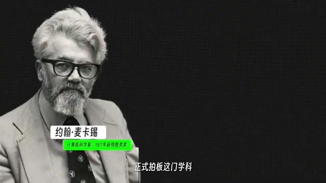
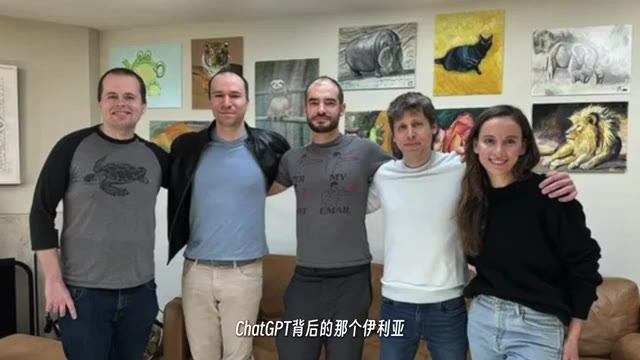
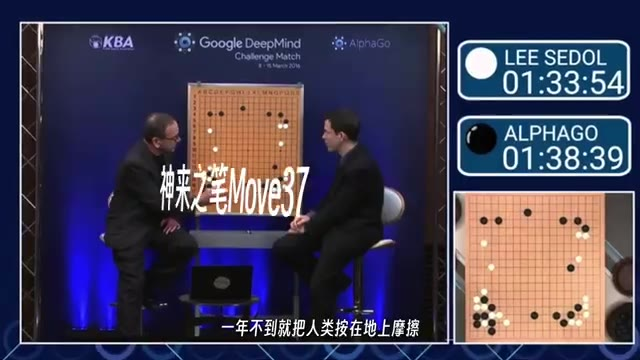
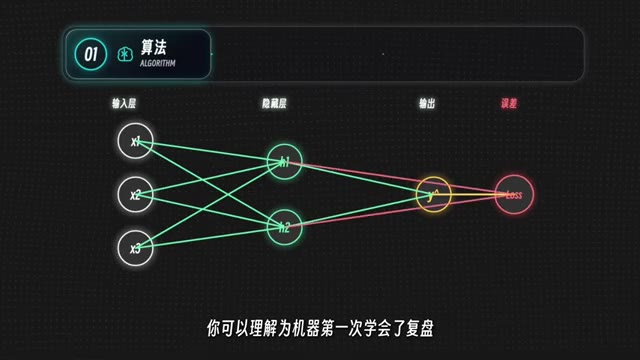
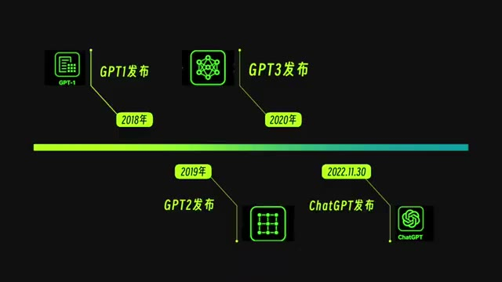
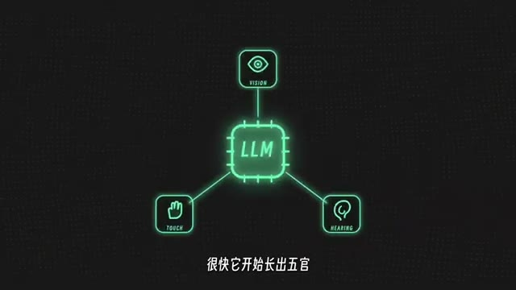
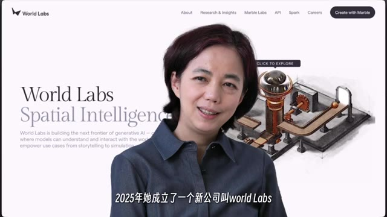

导言
本文沿着一条清晰的时间线，重新梳理人工智能如何走到今天：从图灵测试，到达特茅斯会议；从符号主义、连接主义和两次 AI 寒冬，到深度学习、AlphaGo、Transformer、ChatGPT，再到多模态、智能体、空间智能与具身智能。
它的核心线索不是“某一年发生了什么”，而是一个问题怎样不断变形：1950 年，图灵问的是机器能否思考；今天，我们更关心的是 AI 能不能看懂世界、执行任务、进入物理空间，以及当它真的开始替我们思考时，我们该怎样重新安排自己的角色。



图灵测试：把哲学问题改写成产品问题
这条历史线索从 1950 年的阿兰·图灵讲起。图灵提出了那个后来被反复引用的问题：机器能思考吗？这个问题本来很容易陷进哲学争论，因为“思考”本身就难以下定义。
图灵的聪明之处在于，他没有纠缠定义，而是换了一个可以测试的版本：如果有一天，一台机器隔着屏幕和人聊天，聊到你分不清对面到底是人还是机器，那么它算不算会思考？这就是后来的图灵测试。
这一步非常关键。它把“机器有没有灵魂”这样的问题，转成了“机器能不能表现得像人”这样的问题。从这里开始，AI 这门学科的底层气质逐渐确定：它追求的不是灵魂，而是表现。
达特茅斯：AI 有了正式名字
1956 年夏天，美国达特茅斯学院举办了一场后来改变世界的会议。会议名称朴素，但影响极大：一群年轻科学家试图讨论机器如何模拟智能。
在这次会议上，John McCarthy 正式提出并使用了“Artificial Intelligence”这个名称。也就是从这时起，“AI”不再只是零散想法，而成为一门被命名的研究方向。
这一代研究者身上，既有天真，也有膨胀：他们相信只要给一个夏天和一点经费，就能把人工智能拆明白。今天回头看，这种乐观显得过度，但也正是这种过度乐观，开启了后面几十年的探索。
符号主义、连接主义与两次 AI 寒冬
AI 从早期就分成两条路线。第一条是符号主义：把知识和规则写清楚，手把手告诉机器什么是猫、什么是狗，什么情况应该诊断为某种疾病。这条路的好处是清楚、可解释；坏处是现实世界的常识和例外太多，规则永远写不完。
第二条是连接主义，也就是神经网络。1958 年，Frank Rosenblatt 做出了感知机。它的想法很接近今天的深度学习：不要把全部规则写死，而是让机器从数据中学习。
但当时的算法、数据和算力都不成熟。1969 年，Marvin Minsky 和 Seymour Papert 的《Perceptrons》系统指出了单层感知机的限制，神经网络方向随之遇冷，第一次 AI 寒冬到来。
1980 年代，专家系统重新点燃 AI 热潮。它把行业专家的经验塞进电脑，在医疗诊断、设备维修、金融决策中一度显得很有希望。但规则越写越多，维护越来越困难，现实环境稍微变化，系统就容易失效。1980 年代末到 1990 年代初，第二次 AI 寒冬再次到来。
| 路线 | 核心做法 | 优势 | 瓶颈 |
|---|---|---|---|
| 符号主义 | 人工写规则和知识库。 | 逻辑清晰、便于解释。 | 规则无法覆盖真实世界。 |
| 连接主义 | 让模型从数据中学习。 | 更接近今天的深度学习。 | 早期缺少算法、数据和算力。 |
| 专家系统 | 把专家经验固化成程序。 | 短期商业价值明显。 | 维护昂贵，环境变化后失效。 |
AI 复兴的三要素：算法、数据、算力
AI 重新火起来，关键在三件事：算法、数据和算力。三者缺一不可。
算法层面，1986 年 Geoffrey Hinton、David Rumelhart 和 Ronald Williams 推动反向传播重新进入核心视野。这可以理解为“机器终于学会复盘”：做错之后能知道错在哪里，并调整内部参数。
随后，Yann LeCun 长期推动卷积神经网络路线，并做出 LeNet-5，用于识别手写数字。它后来被银行和邮政系统采用，这意味着神经网络不再只是论文里的名词，而开始进入真实业务。
数据层面，李飞飞推动 ImageNet 项目，用上千万张图片和上万个类别，为计算机视觉提供了巨大的训练场。算力层面，NVIDIA 的 GPU 和 CUDA 让原本用来渲染游戏的芯片，成为训练神经网络的关键基础设施。

2012：AlexNet 把深度学习推上主舞台
如果在 AI 历史里挑一个关键年份，2012 年一定绕不开。那一年，ImageNet 比赛上，Geoffrey Hinton 带着 Alex Krizhevsky 和 Ilya Sutskever 交出了 AlexNet。
AlexNet 做的是图像识别，任务看起来并不夸张，但结果非常夸张：它不是小胜，而是在传统方法面前形成断崖式领先。更重要的是，它跑在 NVIDIA GPU 上训练出来，同时验证了三件事：神经网络并非不行，ImageNet 这样的海量数据确实有用，GPU 会成为 AI 时代的关键工具。
从这一年开始，AI 圈的重心集体转向深度学习。
AlphaGo：AI 不只是模仿人类
深度学习起飞后，AI 先在图像和语音领域横扫。但真正让全球普通人意识到“事情不对了”的，是 AlphaGo。
DeepMind 2010 年在伦敦成立，2014 年被 Google 收购。2016 年 3 月，AlphaGo 以 4:1 击败世界顶尖围棋选手李世石。围棋的复杂度极高，不能靠简单暴力搜索解决。在那之前，很多人认为 AI 想战胜顶尖棋手至少还要十年。
AlphaGo 与李世石的对局中，最著名的一手是 Move 37。那一步棋在当时让许多围棋高手困惑，因为按人类经验并不该下在那里；但事后复盘，它被视为极具创造性的选择。那一刻，很多人第一次真切感到：AI 可能不只是在模仿人类，它也可能走出一条人类没有走过的路。
Transformer、GPT 与 ChatGPT
真正让 AI 进入每个普通人生活的最后一块拼图，是 Transformer。2017 年，Google 发表论文《Attention Is All You Need》，提出 Transformer 架构。它的重要性可以用一句话概括：今天很多大模型往根上追，都离不开它。
Transformer 特别适合并行训练，能够吃下巨大的数据量。模型越大、数据越多，效果越可能出现跃迁式提升，这为后来“大力出奇迹”的路线铺好了路。
OpenAI 把这条路线推到大众面前。2018 年 GPT-1 发布，2019 年 GPT-2 发布，2020 年 GPT-3 发布。2022 年 11 月 30 日，ChatGPT 上线。它把 GPT-3.5 包装成一个聊天框，五天用户突破 100 万，两个月突破 1 亿，成为消费级 AI 的分水岭。
这一天也成为人类与 AI 关系的转折：从此，AI 不再只是论文、实验室或行业工具，而进入每个人的手机、电脑和日常工作。

大模型竞赛：下一代平台的争夺
ChatGPT 爆发后，整个行业进入军备竞赛。几乎所有大厂都意识到：如果 PC 和移动互联网定义了上一代平台，那么大模型可能正在定义下一代平台。
国外阵营里，Google 推出 Gemini，Anthropic 推出 Claude，Meta 选择开源路线推出 Llama，xAI 推出 Grok。国内同样热闹：百度文心、阿里通义千问、字节豆包、腾讯元宝、月之暗面 Kimi、DeepSeek 等模型不断进入公众视野。
那段时间，几乎每隔一段时间就会有公司宣布自己是“最好的模型”，并拿出新的 benchmark 数据。更重要的是：大模型已经不只是单个工具，而开始变成新的基础设施和生态入口。
多模态与智能体：AI 开始长出感官和手脚
大模型光会说话还不够。很快，它开始具备视觉、图像、视频和语音能力。GPT、Gemini、Claude 能看图；Sora、可灵等视频模型能从文字生成动态画面；Midjourney、Stable Diffusion、FLUX 让普通人也能调用视觉创作能力；语音模型开始生成带情绪和语调的音频。
这一步就是多模态：以前的 AI 像一个会打字的大脑，现在它开始有眼睛、耳朵、嘴和手。
2024 到 2025 年，行业焦点又从“大模型”转向“智能体”。过去使用 ChatGPT 像是和聊天框对话，你问一句，它答一句；智能体则是你给它一个目标，它自己拆任务、打开浏览器、查资料、写代码、调用工具，最后把结果交给你。
这意味着用户从“使用者”变成“老板”。如果大模型是 AI 的大脑，智能体就是给大脑装上手和脚。

空间智能与具身智能：从文字世界走向物理世界
就在大家卷语言模型时，另一个关键方向，是李飞飞提出的空间智能。它的核心判断是：语言是人类的发明，但空间不是。现在的大语言模型很强，但它本质上仍然生活在文字里。
真实世界是三维的，有重力、有物理规则，也有因果关系。如果 AI 真的要开车、做手术、搬东西、陪伴老人，它必须理解空间，像婴儿一样学习感知三维世界。
空间智能再往前一步，就是具身智能：把 AI 放进机器人身体里。Tesla Optimus、Figure AI、1X，以及国内机器人团队都在推动类似方向。大模型解决的是“脑子”的问题，下一步最缺的是能行动的身体。

结尾：问题已经变了
回头看，这段历史像一场 75 年的接力赛：图灵提出问题，McCarthy 给学科命名；早期研究者经历两次寒冬，验证了哪些路走不通；Hinton 让深度学习重新回到舞台中央，Yann LeCun 让神经网络进入现实业务，李飞飞用 ImageNet 搭起训练场，NVIDIA 用 GPU 和 CUDA 成为 AI 时代的电力与铁路。
随后，DeepMind 的 AlphaGo 告诉世界 AI 已经不是玩具；Google 的 Transformer 打下大模型地基；OpenAI 的 GPT 和 ChatGPT 把 AI 塞进每个人的手机；大厂内卷让 AI 成为新基础设施；智能体让 AI 有了手脚；空间智能和具身智能正在把 AI 带向真实物理世界。
于是，图灵在 1950 年提出的“机器能思考吗”，今天仍在被回答。但问题已经不只是机器能不能通过聊天测试，而是它能不能看懂世界、替我们做决定、进入物理空间；如果它真的比我们聪明，我们又该怎么办。
从“能不能思考”，到“替我们思考什么”。
这段历史真正留下的不是一串年份，而是一种时代感：AI 已经从论文里的思辨，变成每个人手机、电脑和工位上的现实。
完整时间轴
图灵测试。 把“机器能思考吗”改写成可观察、可测试的表现问题。
达特茅斯会议。 John McCarthy 正式命名人工智能，早期研究者带着强烈乐观进入新领域。
两条路线和两次寒冬。 符号主义、连接主义、感知机、专家系统依次登场，也依次暴露限制。
算法、数据、算力。 反向传播、LeNet-5、ImageNet、GPU 与 CUDA 构成深度学习复兴的底座。
AlexNet。 2012 年 ImageNet 比赛验证深度学习、大数据和 GPU 的组合威力。
AlphaGo。 以 4:1 击败李世石，Move 37 让人看到 AI 可能走出非人类路径。
Transformer 与 ChatGPT。 从 Attention 到 GPT，再到 ChatGPT 上线，大模型进入大众生活。
大模型竞赛。 Google、Anthropic、Meta、xAI 和国内模型团队进入平台级竞争。
多模态与智能体。 AI 获得视觉、语音、图像、视频和工具调用能力，开始从回答问题走向完成任务。
空间智能与具身智能。 AI 从文字世界走向三维世界和机器人身体。
结尾复盘。 75 年接力赛把问题从“机器能不能思考”推向“我们想让它替我们思考什么”。